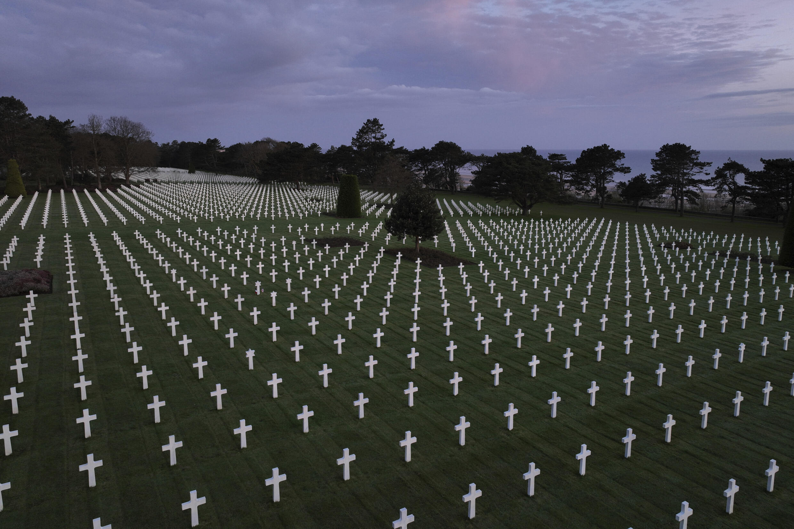
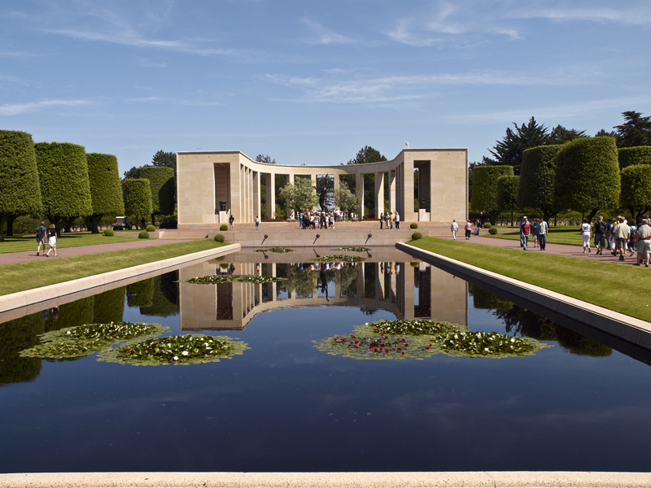

Découvrez Colleville-sur-Mer !
Avec ses magnifiques paysages, Colleville-sur-Mer est l'une des plus belles villes de la côté normande...
En Savoir +

Découvrez le Cimetière américain !
Avec ses plus de 9 380 tombes, c'est un mémorial à ciel ouvert pour les soldats américains tombés au combat...
En Savoir +
Découvrez Omaha Beach
Arpentez l'une des cinq plages du Débarquement où ont débarqué des milliers de soldats américains...
En Savoir +

Découvrez l'Histoire
Apprenez en plus sur le Débarquement des alliés en Normandie, le 6 juin 1944...
En Savoir +